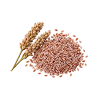

होम / इसबगोल

इसबगोल का भाव आज | Isabgol Mandi Price Today
इसबगोल का भाव आज जानना किसानों और व्यापारियों के लिए ज़रूरी है। इस पेज पर उंझा, मेड़ता और जोधपुर जैसी उपलब्ध मंडियों में इसबगोल के न्यूनतम, मॉडल और अधिकतम भाव प्रति क्विंटल में देखें। गुणवत्ता, आवक और नज़दीकी मंडियों की तुलना से बेहतर फैसला लिया जा सकता है।
Check available Isabgol mandi prices before you sell. Compare minimum, modal and maximum rates with quality, arrivals and nearby market records.
इसबगोल का भाव कैसे देखें और रेट किन बातों से बदलता है
इसबगोल बीज और भूसी से जुड़े विशेष बाजार की फसल है। इसका भाव सामान्य अनाज की तरह नहीं समझना चाहिए; lot की शुद्धता और प्रसंस्करण-योग्यता महत्वपूर्ण हो सकती है।
आज का इसबगोल भाव कैसे देखें
इस पेज की मंडी-वार तालिका में न्यूनतम, मॉडल और अधिकतम भाव देखें। अपनी नज़दीकी मंडी तथा उपलब्ध दूसरी मंडियों के भाव की तुलना करके फैसला लेना अधिक उपयोगी रहता है।
- अपनी मंडी या राज्य चुनकर भाव देखें।
- न्यूनतम, मॉडल और अधिकतम भाव में अंतर समझें।
- पुराने और नए उपलब्ध रिकॉर्ड में फर्क देखकर निर्णय लें।
गुणवत्ता और ग्रेड का असर
बीज की सफाई, नमी, विदेशी पदार्थ और lot की एकरूपता इसबगोल की खरीद में देखी जाती है। बीज और भूसी के बाजार-मूल्य को सीधे एक जैसा नहीं माना जाता।
आवक, मांग और बाजार
प्रसंस्करण इकाइयों की मांग, उपलब्ध stock और seasonal आवक के अनुसार इसबगोल के भाव में अंतर आ सकता है। स्वास्थ्य संबंधी दावे कीमत का विश्वसनीय आधार नहीं हैं।
इसबगोल बेचने या खरीदने से पहले ध्यान रखें
- बीज और भूसी का भाव अलग-अलग पूछें।
- नमी और विदेशी पदार्थ कम रखें।
- उंझा या पास की उपलब्ध मंडियों के समान grade records से तुलना करें।